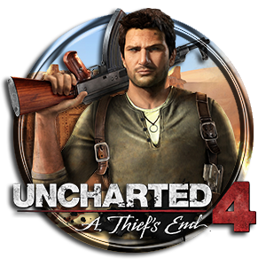

welcome to the most popular game of this year
Uncharted 4: A Thief's End is a 2016 action-adventure game developed by Naughty Dog and published by Sony Computer Entertainment. It is the fourth main entry in the Uncharted series. Set several years after the events of Uncharted 3: Drake's Deception, players control Nathan Drake, a former treasure hunter coaxed out of retirement by his presumed-dead brother Samuel. With Nathan's longtime partner, Victor Sullivan, they search for clues for the location of Henry Avery's long-lost treasure. A Thief's End is played from a third-person perspective, and incorporates platformer elements. Players solve puzzles and use firearms, melee combat, and stealth to combat enemies. In the online multiplayer mode, up to ten players engage in co-operative and competitive modes.
Development of Uncharted 4 began in 2011, soon after the release of Uncharted 3. It was led by creative director Amy Hennig and game director Justin Richmond. Development was hampered in 2014 due to Hennig and Richmond's departure from Naughty Dog; they were replaced by Neil Druckmann and Bruce Straley. The team sought to incorporate elements of open-world gameplay, with larger levels to encourage free-roaming exploration and combat. The relationship between Nathan and Elena was central, and Naughty Dog attempted to humanize them more than in previous games. A Thief's End was released in May 2016 for the PlayStation 4. It was the first Naughty Dog game developed specifically for the PlayStation 4. The team took advantage of the hardware to process larger dynamic environments.
Following its announcement in November 2013, A Thief's End was widely anticipated. The game was acclaimed by reviewers, particularly for its gameplay, narrative, emotional depth, visuals, and multiplayer. Several reviewers found the game a worthy conclusion to Nathan's story. It won several year-end accolades, including Game of the Year awards from several gaming publications, critics, and game award ceremonies. With over 15 million copies sold, it is the highest-selling Uncharted game and one of the best-selling PlayStation 4 games. A standalone expansion, The Lost Legacy, was released in 2017.
Uncharted Images:


Uncharted Videos:
Uncharted Compatiblity Consoles:
Uncharted 4 - The Only on PlayStation Collection - GAME Exclusive (PlayStation 4) ... A Thief's End delivers the most thrilling Uncharted adventure yet with new gameplay mechanics, larger, more open environments, and enhanced graphics and animations that showcase the power of the PS4 system.